K562 Neither DNase unmatched - State 2:TssF (n=22)
K562 Neither DNase unmatched - State 2:TssF (n=22)
[
See group descriptions
]
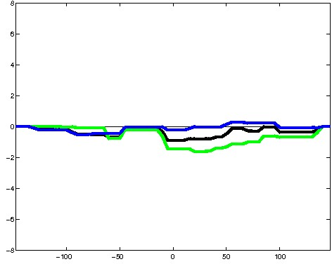
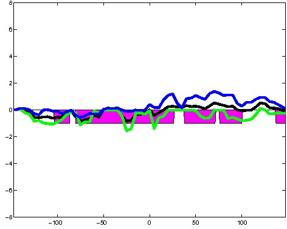
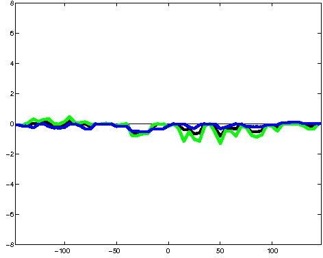
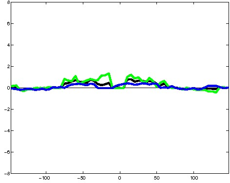
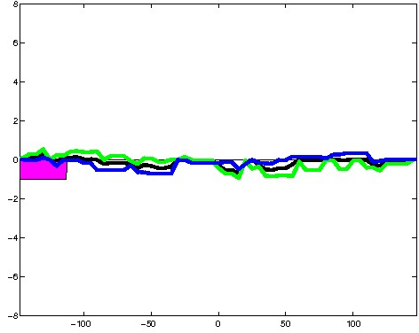
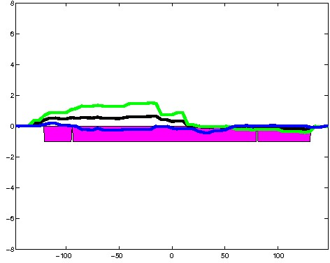
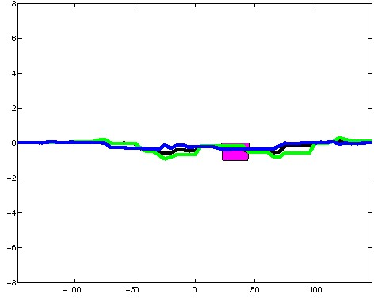
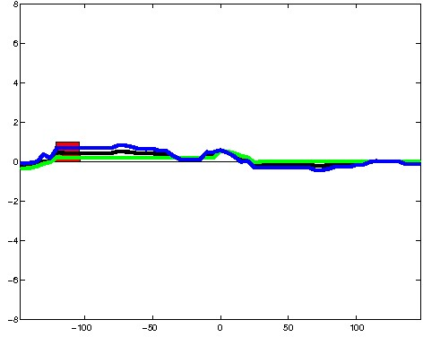
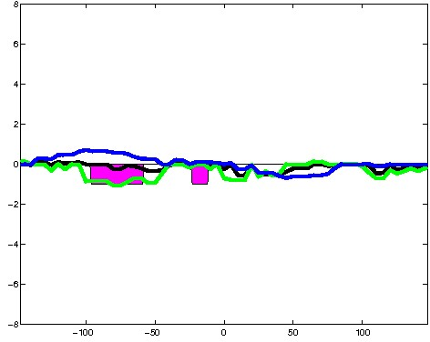
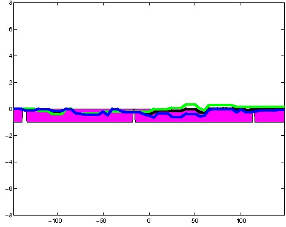
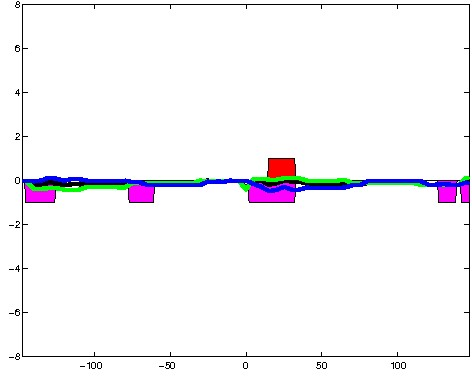
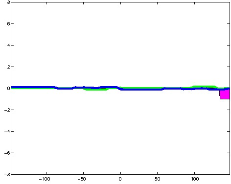
; picked in Huvec (state 5:Enh, DNase); unmatched; chr3:71,439,429-71,439,723 (295bp)")
; picked in H1hesc (state 2:TssF, DNase); unmatched; chr9:35,070,089-35,070,383 (295bp)") 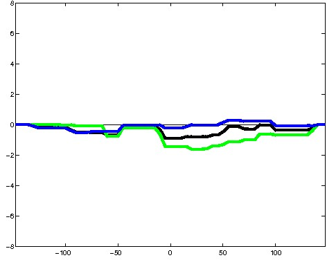
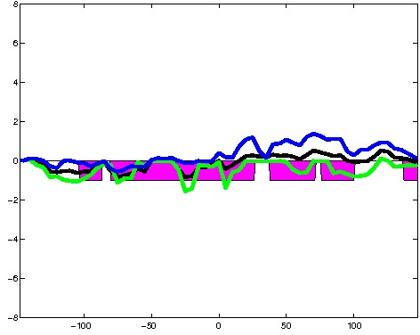
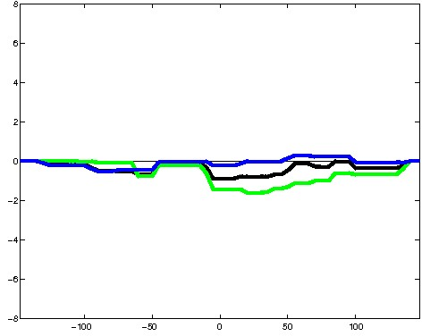
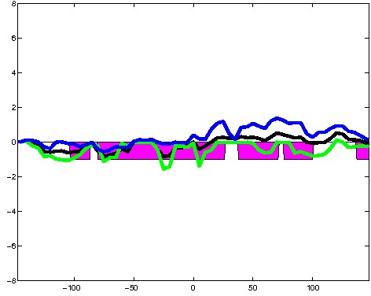
; picked in Huvec (state 1:Tss, DNase); unmatched; chr10:99,401,209-99,401,503 (295bp)") 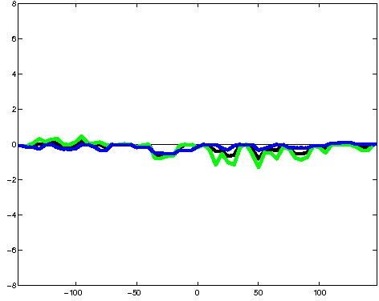
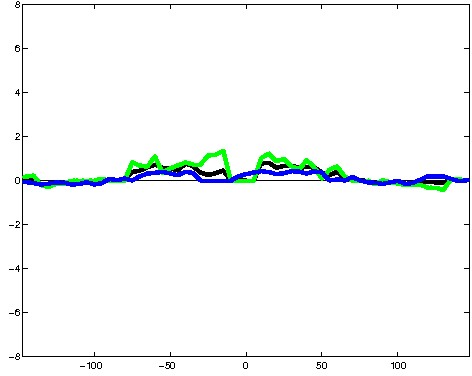
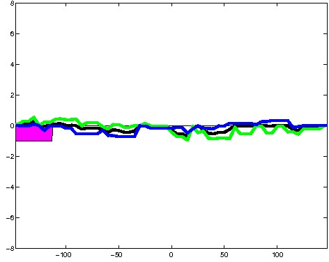
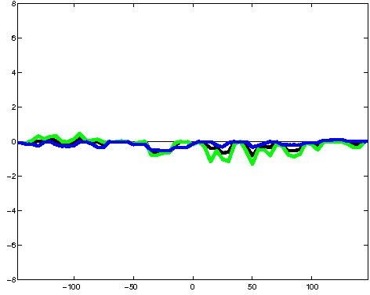
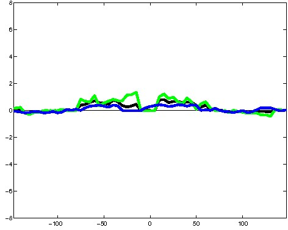
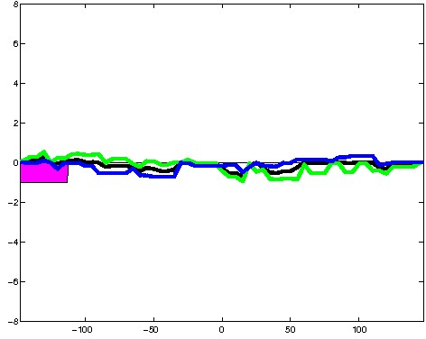
; picked in Huvec (state 3:PromF, DNase); unmatched; chr6:153,320,989-153,321,283 (295bp)") 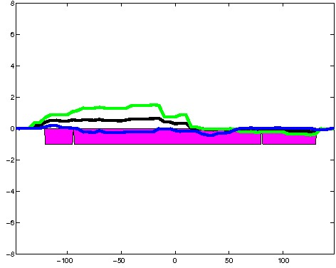
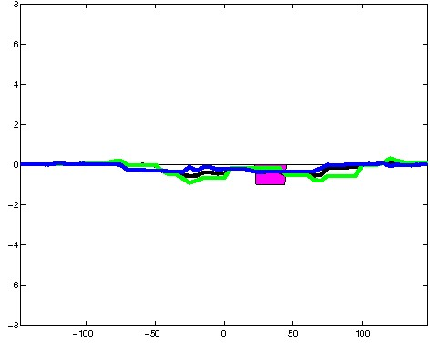
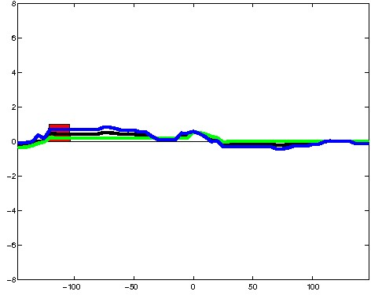
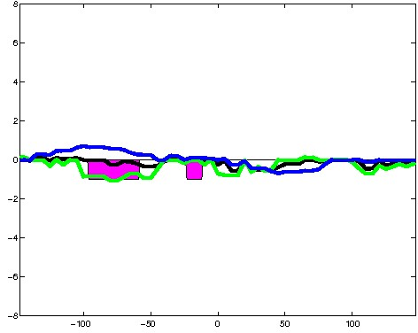
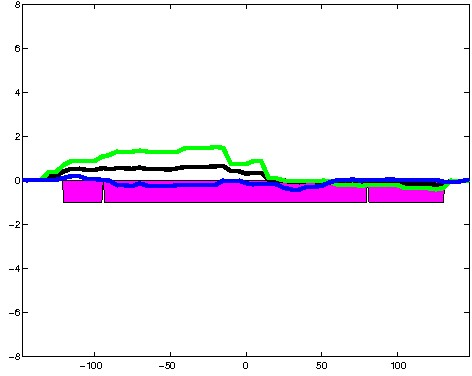
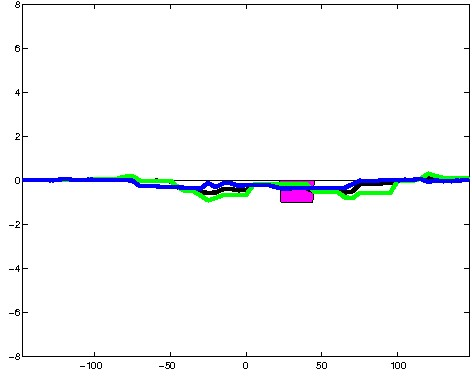
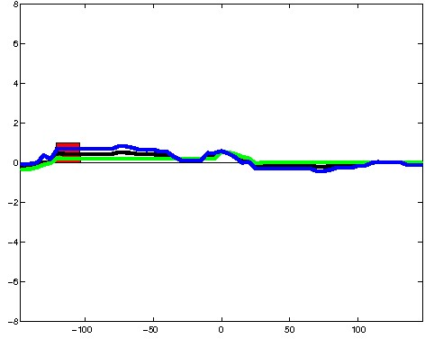
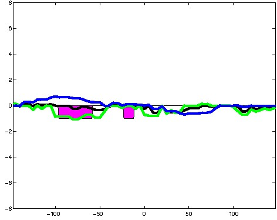
; picked in HepG2 (state 5:Enh, DNase); unmatched; chr11:33,745,789-33,746,083 (295bp)")
; picked in Huvec (state 5:Enh, DNase); unmatched; chr17:62,970,529-62,970,823 (295bp)")
; picked in H1hesc (state 5:Enh, DNase); unmatched; chr8:146,013,269-146,013,563 (295bp)")
; picked in Huvec (state 4:PromP, DNase); unmatched; chr2:38,602,209-38,602,503 (295bp)") 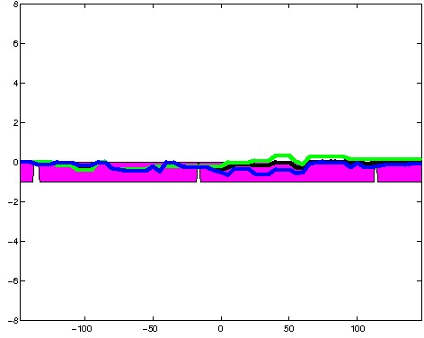
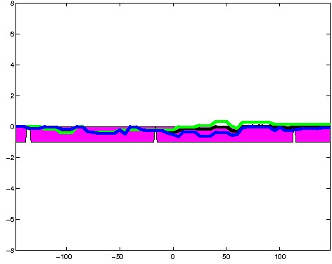
; picked in Huvec (state 5:Enh, DNase); unmatched; chr8:38,237,729-38,238,023 (295bp)") 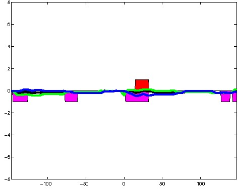
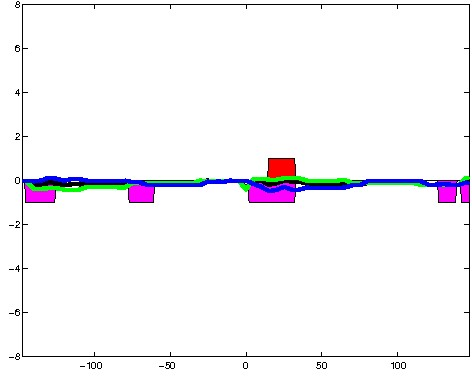
; picked in Huvec (state 3:PromF, DNase); unmatched; chr5:137,236,849-137,237,143 (295bp)") 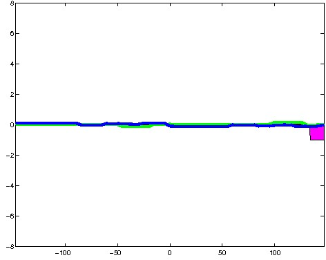
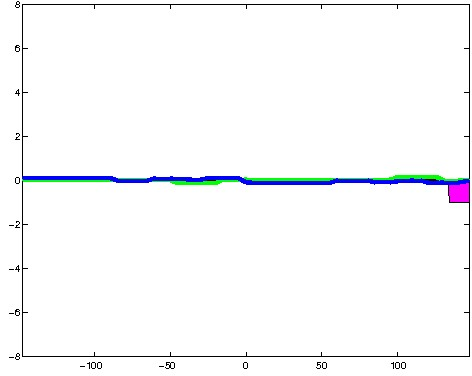